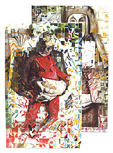

|  |  |  |  |  |
|
 click here to view larger image |
 |
Madonna With or Without Child oil paint, 2 cotton canvases, linoleum prints 1 x 2 meters 1999 collection Dory and Kees Grandia A woman in the front painting holds a 'poster' of herself holding a baby. Most likely this is because these images evolved when I was really thinking about whether or not I wanted to have children. After finishing the painting(s), I saw an artist's work entitled, "Madonna Without Child." Immediately I knew this painting was, "Madonna With or Without Child." |
|
People often ask about the process for this painting.
I am attracted to the detailed visual aspects of pattern (love Gustav Klimt) as well as the metaphorical connotations. Life is full of pattern: weather patterns, speech patterns, behavior patterns, etc. Thinking of DNA, I was seeking to make a 'grouping pattern' that would somehow represent the way cells come together as an embryo grows. It's only a little glob of cells in the beginning but before long, all of the ear cells are grouped together and all of the heart cells stick together, etc. The pattern in this painting came from a 'blueprint' made from cutting up the marker drawings of eight people into small squares. All of the pieces were grouped by color and glued onto poster board. Photographs of the mother and child were used as references in the painting. After getting the people down, the pattern was transferred to the canvas square by square and then the painting was finished by integrating the people underneath and the pattern above. |